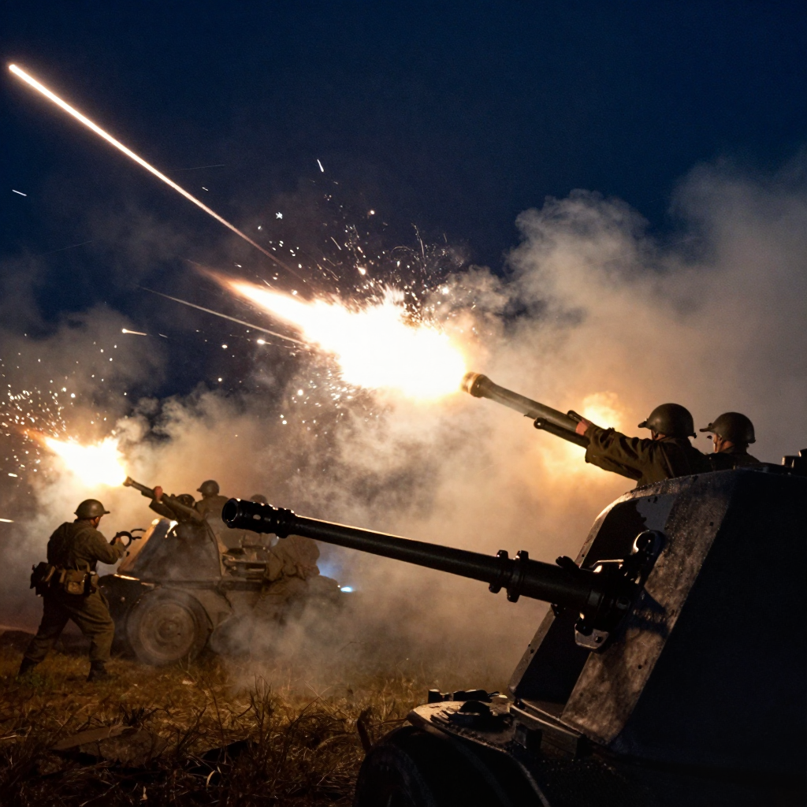
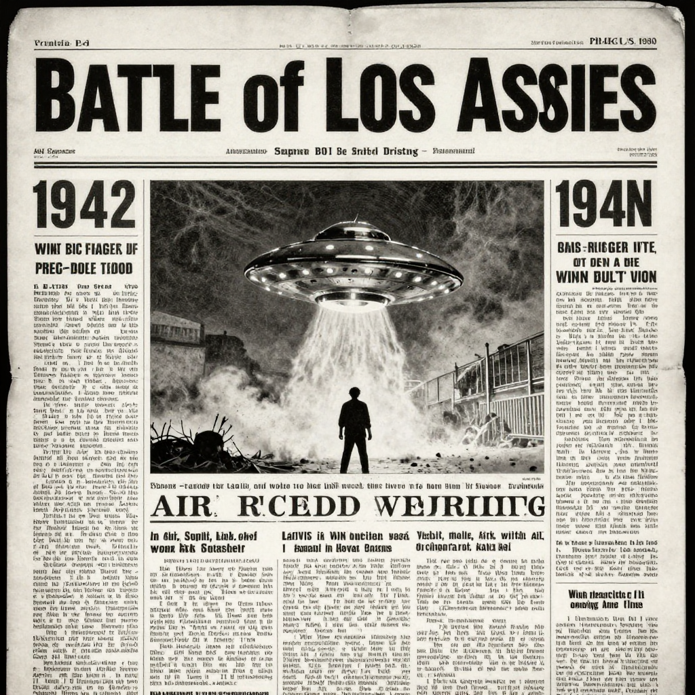

The Battle of Los Angeles: Did UFOs Attack in 1942?

The night sky over Los Angeles lit up with searchlights and explosions on February 25, 1942.
Imagine waking up in the middle of the night to air raid sirens screaming. You look outside and see giant searchlights sweeping across the sky and explosions everywhere. The military is firing at something... but what?
This really happened in Los Angeles on February 25, 1942. For hours, the U.S. military battled a mysterious object in the sky. But to this day, nobody knows for sure what they were shooting at.
A City on Edge
It was just a few months after Pearl Harbor. America had entered World War II, and everyone on the West Coast was terrified of a Japanese attack. Air raid drills happened regularly. People covered their windows at night so enemy planes couldn't find targets.
At 2:25 AM on February 25, air raid sirens began wailing across Los Angeles. The city went into total blackout. Searchlights turned on and began sweeping the sky. Something was up there.

Anti-aircraft guns fired over 1,400 rounds at the mysterious object in the sky!
💥 The Numbers Are Shocking
The military fired over 1,400 anti-aircraft shells into the sky that night. The barrage lasted for more than an hour. Yet somehow, nothing was ever shot down!
What Did People See?
Thousands of people watched the spectacle from their homes and rooftops. Witnesses described seeing:
- 🔍 A large object moving slowly across the sky
- 💡 Something that glowed or reflected the searchlights
- ✈️ Some reported seeing a formation of aircraft
- 🛸 Others claimed it was one giant object
The object (or objects) seemed to take direct hits from anti-aircraft fire but kept moving. Shells exploded all around it, but nothing fell from the sky.
The Next Morning

Newspapers across the country ran dramatic headlines about the mysterious battle.
When dawn broke, the all-clear signal finally sounded. The damage assessment was strange:
- 🏠 Several buildings were damaged by falling shrapnel
- 🚗 Cars were hit by debris
- 😢 Five people died - but from heart attacks and car accidents, not the attack itself
- 🛸 No enemy aircraft were found. No wreckage. No bodies.
📰 What Did the Newspapers Say?
The next day, newspapers couldn't agree on what happened. Some said it was a Japanese raid. Others said it was a false alarm. A few even suggested it might have been extraterrestrial!
The Theories
So what really happened? Here are the main theories:
🎈 Weather Balloon: The military later claimed it might have been a weather balloon. But would they really fire 1,400 shells at a balloon for over an hour?
🇯🇵 Japanese Attack: Some believe it was a real Japanese reconnaissance mission. Japan did have submarines capable of launching small planes. But no Japanese records mention such an attack.
😨 Mass Hysteria: Was everyone just scared and imagining things? It's possible, but thousands of people saw the same thing, and photographs from that night show something in the searchlights.
🛸 UFO: Some believe the military was fighting an extraterrestrial spacecraft. The object's ability to withstand heavy fire and move slowly does seem strange...
The Mystery Continues
More than 80 years later, the "Battle of Los Angeles" remains unexplained. The military's official explanation changed several times. Files have been lost or destroyed. Witnesses have passed away.
Whatever happened that night, it remains one of the strangest events in American history!
Clear Summary for Readers of All Ages
The Battle of Los Angeles: Did UFOs Attack in 1942? can sound dramatic, but the best way to understand it is to separate strong evidence from speculation. This article is written to be clear enough for younger readers while still useful for adults who want reliable context.
In simple terms, this topic matters because it connects three ideas: what happened, how we know, and what remains uncertain. The core story in The Battle of Los Angeles: Did UFOs Attack in 1942? is easier to follow when we use a timeline, define key terms, and point directly to sources.
The night sky over Los Angeles lit up with searchlights and explosions on February 25, 1942.
Background Timeline (What Happened, Step by Step)
- The night sky over Los Angeles lit up with searchlights and explosions on February 25, 1942.
- This really happened in Los Angeles on February 25, 1942.
- Experts continue revisiting The Battle of Los Angeles: Did UFOs Attack in 1942? as better tools and stronger source checks become available.
- Experts continue revisiting The Battle of Los Angeles: Did UFOs Attack in 1942? as better tools and stronger source checks become available.
- Experts continue revisiting The Battle of Los Angeles: Did UFOs Attack in 1942? as better tools and stronger source checks become available.
This timeline view helps younger readers build a mental map, and it helps adult readers evaluate whether later claims fit the documented sequence of events.
What We Know with Strong Support
Across discussions of The Battle of Los Angeles: Did UFOs Attack in 1942?, several points are consistently supported by records or repeatable analysis:
- The night sky over Los Angeles lit up with searchlights and explosions on February 25, 1942.
- Imagine waking up in the middle of the night to air raid sirens screaming.
- You look outside and see giant searchlights sweeping across the sky and explosions everywhere.
- But to this day, nobody knows for sure what they were shooting at .
These claims are stronger because they can be checked independently, rather than depending on one dramatic story or one unverified source.
How Researchers Study This Topic
Good history is a method, not just a story. When experts examine The Battle of Los Angeles: Did UFOs Attack in 1942?, they usually combine source criticism, technical analysis, and contextual comparison.
- Historians compare primary records, later retellings, and modern scholarship to reduce errors from repetition.
- A strong interpretation separates what documents clearly show from what is inferred later by commentators.
- Context is essential: social, political, and economic conditions often explain why events looked mysterious at the time.
For readers aged 7+, a simple rule is helpful: if someone makes a big claim, ask, “What is the evidence, and can another expert check it?”
What Experts Still Debate
Even with good evidence, not every question has a final answer. In The Battle of Los Angeles: Did UFOs Attack in 1942?, debates often continue because the surviving data is incomplete, damaged, or interpreted in different ways.
One common source of confusion is mixing the topics of A City on Edge, What Did People See?, and The Next Morning as if they prove the same thing. In reality, each part of the story may require different standards of proof.
A balanced approach is to keep uncertainty visible: we can confidently state what records show today, while leaving room for future evidence to update the picture.
Myths vs. Evidence
Myth: If a topic is mysterious, experts have no idea what happened.
Evidence-based view: Usually, experts know many parts of the story; the debate is about specific details.
Myth: The most dramatic explanation is probably true.
Evidence-based view: The best explanation is the one that matches the most verifiable facts with the fewest assumptions.
Myth: New claims automatically replace old research.
Evidence-based view: New claims become accepted only after careful checks, replication, and critical review.
Why This Story Still Matters Today
The Battle of Los Angeles: Did UFOs Attack in 1942? is not only a curiosity from the past. It is also a practical lesson in how people evaluate information. In a world full of fast headlines, this topic reminds us to slow down, check sources, and separate confidence from certainty.
For younger readers, this builds critical-thinking skills. For adult readers, it improves media literacy and historical judgment. In both cases, the goal is the same: understand the past clearly enough to make better decisions in the present.
Mini Glossary (Plain Language)
- Primary source: A record made close to the event, like a report, letter, inscription, or official document.
- Secondary source: A later explanation that interprets primary evidence.
- Hypothesis: A proposed explanation that must be tested against evidence.
- Consensus: The view most experts currently support, knowing it can change with new data.
- Archival record: Stored historical documents such as court files, newspapers, and official correspondence.
- Historical bias: A systematic slant in records due to who wrote them and why.
Quick Recap
If you remember only three things about The Battle of Los Angeles: Did UFOs Attack in 1942?, keep these: (1) there is real evidence worth studying, (2) some questions remain open, and (3) careful source-checking is the best path to reliable understanding.
That combination of curiosity and caution is what turns a mystery into a meaningful history lesson for readers of every age.
References & Further Reading
Editorial note: We cross-check claims across multiple independent sources. See our Editorial Policy.